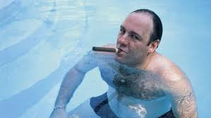

Libros
Existen varios libros sobre diferentes aspectos de la serie. En España sólo se ha publicado un libro original, Los Soprano Forever, y la traducción del libro The Sopranos and Philosophy.
Libros en español
- Los Soprano Forever: Antimanual de una serie de culto.
- Los Soprano y la filosofía: Mato, luego existo.
Libros en inglés.
- The Sopranos: The Book
- The Psychology of the Sopranos: Love, Death, Desire
- The Sopranos Family Cookbook
- Entertaining with the Sopranos
- The Sopranos and Philosophy: I Kill Therefore I am
- The Sopranos on the Couch: The Ultimate Guide
- Tony Soprano on Management: Leadership Lessons